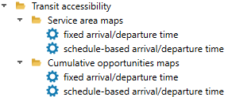
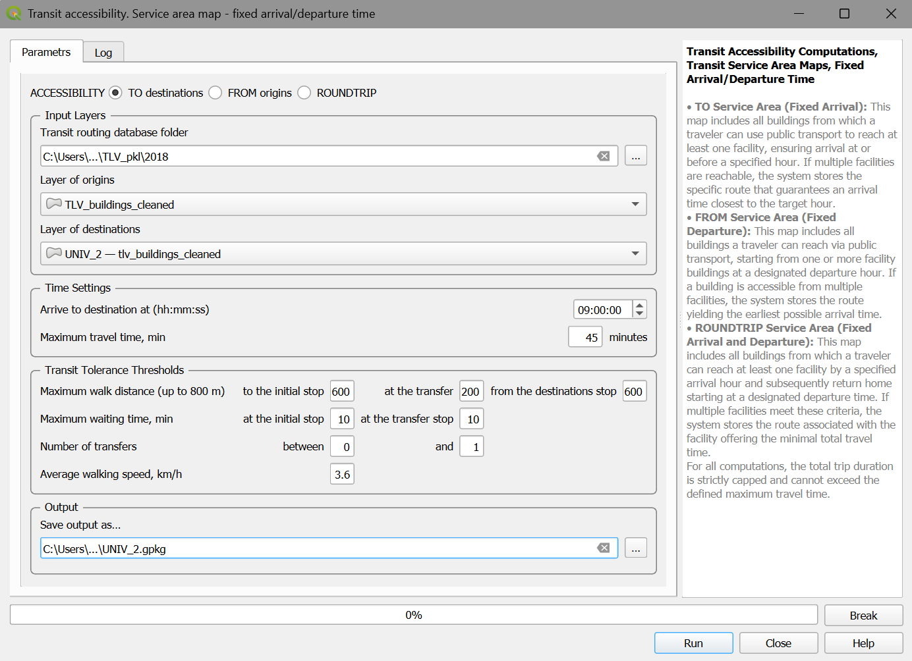
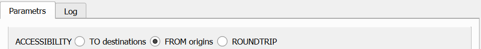
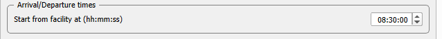
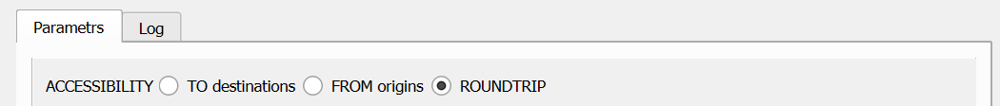
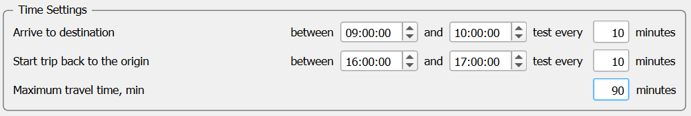
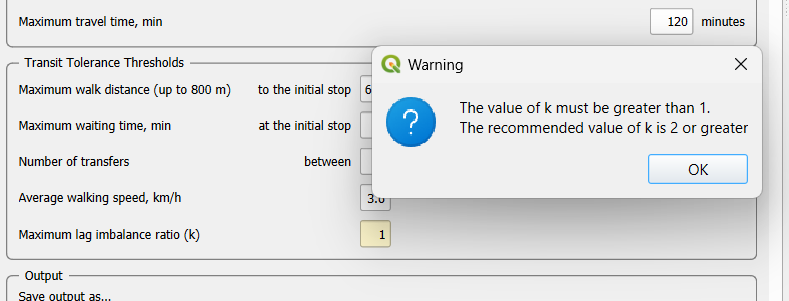
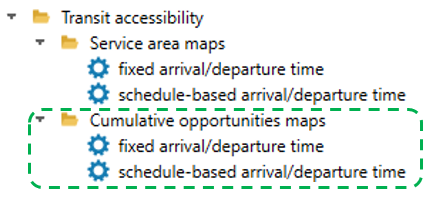
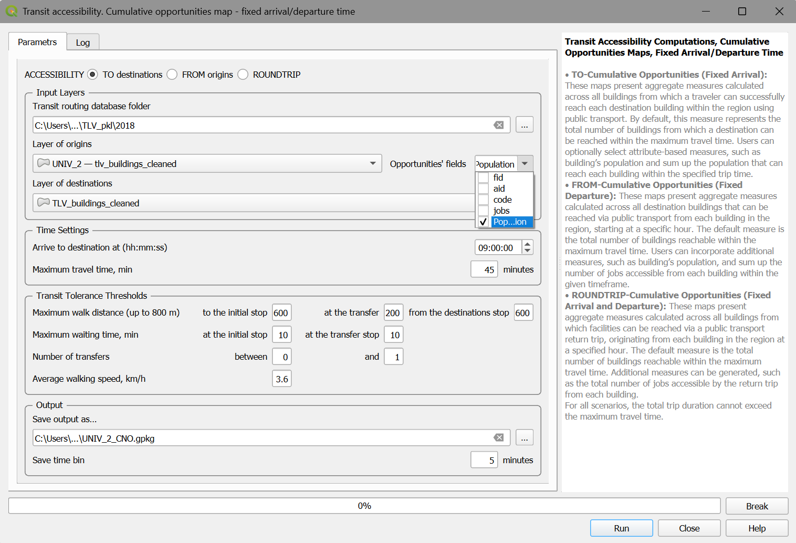

5. Transit accessibility computations
Transit accessibility is computed using the databases of roads, buildings, and public transport networks (routes and timetables) that were generated by the AC plugin during the “Prepare Databases” stage. This section details how to execute these computations. The primary options for Transit Accessibility computations are displayed in Figure 1. Below, we explain a few options of the four main sections in detail, followed by an explanation of how the other options differ. For definitions regarding Service Area and Cumulative Opportunities maps, please refer back to Sections 2.8, 2.9 and 2.10

Figure 1. Transit accessibility computations menu
5.1. Transit Service area, fixed arrival/departure time
To compute Service Area maps (Figure 1), three datasets must be prepared and ready for use:
The transit routing database (see Section 5.3).
The topologically clean layer of buildings, loaded in the current QGIS project.
The visualization layers (Voronoi polygons or hexagons).
Note
Service area calculations require valid Origin and Destination layers. These must be selections originating from either a topologically cleaned buildings layer or a hexagonal grid constructed by the AC plugin. Although the plugin includes built-in verification checks, input validity cannot be validated exhaustively; ensure selection integrity before execution.
As outlined in Section 2.8, Transit Service Areas can be calculated for trips destined TO a location, originating FROM a location, or combined ROUNDTRIP journeys.
We will start with a detailed walkthrough to calculate a TO transit service area based on a fixed arrival time and then describe how the other options adapt these principles. Navigate to Service area maps → fixed arrival/departure time.
5.1.1. Accessibility TO facility – parameters and computation execution
For TO-accessibility, the algorithm estimates the travel time for a transit trip based on the latest possible departure from its origin that still allows the user to arrive at the destination on time.
Note
We exclude the initial waiting time from the total travel time for TO-accessibility calculations because a traveler can arrive at the stop at any point before the latest possible departure.
The dialog for configuring parameters for computing fixed-time TO-accessibility is shown in Figure 3.

Figure 3. The Transit service area maps → fixed arrival/departure time dialog with the TO option selected.
The dialog box is divided into several logical blocks: Input block
Transit routing database folder: The directory containing the transit routing database generated at the “Prepare Databases” stage. You can check that it includes
stops.json,stoptimes.json,transfers.json,stop_idx_in_route.json, androutes_by_stop.json.Layer of origins: Origins are buildings where the trip to destinations can start. It may be the entire layer of buildings or a selection set, prepared by the user in advance.
Layer of destinations: Destinations are buildings where the trip from origins can end. It may be the entire layer of buildings or a selection set, prepared by the user in advance.
Time settings block
Arrival to destination at (hh:mm:ss): The absolute latest time the traveler must arrive at the destination facility.
Maximum travel time, min: The absolute maximum duration allowed for the entire trip (door-to-door).
Transit tolerance thresholds block
Maximum walk distance (up to 800m):
to the initial stop: The maximum acceptable network walking distance from the trip origin to the first transit stop. The default is 400 m. This value must not exceed 800 m.
at the transfer: The maximum acceptable network walking distance between two different stops during a transfer. The default is 150 m. This value must not exceed 800 m.
from the destination stop: The maximum acceptable network walking distance from the final alighting stop to the actual destination building. The default is 400 m. This value must not exceed 800 m.
Maximum waiting time, min
at the initial stop: The maximum acceptable time travelers will wait at their first stop.
at the transfer stop: The maximum acceptable time travelers will wait when transferring between PT lines.
Number of transfers: The minimum and maximum allowed number of transfers for a single transit trip. The allowed range is between 0 to 2, the default is between 0 and 1.
Average walking speed (km/h): The assumed average pedestrian walking speed.
Output block
Save output as…: Set the name of the .gpkg file that will collect the log file and the results of the computations. Additional copy of the log file will be saved in the .CSV format. The default name of the output .gpkg file is the concatenation of the date and time of the computations start, [YYYYMMDD] + “_” + [HHMMSS]. It is shown in the dialog box and, typically, is changed by the user.
Note
The visualization layer is assigned automatically based on the user’s choice of the layers of origin and destinations.
Click Run to initiate the calculation. The Progress bar tracks the status of the computations. You can interrupt the process at any time by clicking Break. The Log tab presents the run metadata. The computation results are saved as a .gpkg file containing up to three tables. Each table name begins with a 4-letter prefix key that codes your chosen computation options:
1st Letter (Mode): p (public transport) or c (car)
2nd Letter (Travel time- or Opportunities-based assessment): A (service Area) or O (cumulative number of Opportunities)
3rd Letter (Schedule awareness): f (fixed) or s (schedule-based) arrival/departure time
4th Letter (Direction): T (TO), F (FROM), or R (ROUNDTRIP)
For example: The prefix pAfT represents public transport (p), service area-based accessibility assessment (A), fixed arrival time (f), TO-accessibility (T)
The number of tables in your output depends on your settings and destination count:
pAfT_log: A log of the computation run settings (e.g.,pAfT_log).pAfT_fastest_trip_all: This table maps the travel time between each origin building and its closest accessible destination within the maximum travel time. Each record includes the origin ID, the fastest destination’s ID, and a granular breakdown of the trip by legs.
Note
This basic output is automatically added to your QGIS project and joined to the Visualization layer to render travel times.
pAfT_fastest_trip_by_destinations: This complementary table is only generated if your destinations layer contains more than one location. It details the fastest total travel time and leg count from each accessible building to each specific destination. If a destination cannot be reached within the maximum travel time, its values are marked as NULL. To use this table, you must manually add it to your QGIS project from the .gpkg output file.
Advanced Use Case: The …_by_destinations… output is highly useful for advanced spatial analysis, such as identifying residential buildings from which a user can reach more than 50% of all downtown fashion shops within 30 minutes. For a concrete example using the TAMA road and building layers, see Section 10.
5.1.2. Accessibility TO destinations – the log file and the structure of the report
The log file (Figure 4) generated in the results folder records all run settings and the total computation time. This exact content is also mirrored in the UI’s Log tab.
Figure 4. Log file for the fixed arrival time, TO-facility transit computations.
The basic results table pAfT_fastest_trip_all contains the step-by-step details of the trip from each accessible building TO the closest destination (Figure 5):
Attribute |
Meaning |
|---|---|
Origin_aid |
The unique aid of the start building. |
Start_time |
The exact time a traveler leaves the origin building. |
Walk_time1 |
The walking duration to the initial boarding stop. |
BStop_ID1 |
The GTFS stop_id of the initial boarding stop. |
Wait_time1 |
The time spent waiting at the initial boarding stop, set zero in case of TO accessibility since the latest possible departure is considered |
Bus_start_time1 |
The departure time of the first motorized transit leg. |
Line_ID1 |
The GTFS line_id of the transit line used for the first leg. |
Ride_time1 |
The travel duration of the first motorized leg. |
AStop_ID1 |
The GTFS stop_id of the stop where the traveler alights from the first leg. |
Bus_finish_time1 |
The arrival time to the stop of the first alighting. |
Walk_time2 |
The walking duration to the first transfer stop (if applicable). |
Next motorized legs and transfers |
Repeated fields for the second and third leg if occur. |
DestWalk_time |
The walking duration from the destination stop to the destination building. |
Destination_ID |
The unique ID of the destination building. |
Destination_time |
The arrival time at the destination for the trip with the latest possible arrival, yet before the arrival time. |
Duration |
The total door-to-door trip duration. |
Figure 5. The layout of the fixed-time TO facility accessibility computations output.
For a practical example of these outputs, see Section 10.
5.1.3. Accessibility FROM facilities, fixed-time departure
To compute accessibility originating from specific origins, select the FROM option in the ACCESSIBILITY row of the dialog (Figure 6).

Figure 6. The FROM accessibility computation is selected.
FROM-accessibility travel time is estimated based on the transit trip that results in the earliest possible arrival at the destination. Most parameters of the FROM-computations remain identical to the TO-accessibility setup. The basic difference lies in the definition of origins and destinations: the origin buildings (typically, facilities) now act as the starting points while the destinations, typically, are all buildings in the city. Furthermore, the “Arrival time” in the Time settings is replaced by a “Start from the origin” time (Figure 7).

Figure 7. The configuration of the Arrival/Departure dialog for fixed-time FROM-accessibility.
The result .gpkg file for FROM-accessibility has the same structure as the TO-accessibility outputs, with minor adjustments of field names to reflect the trip FROM the origins to other buildings in the city.
5.1.4. Roundtrip accessibility, fixed-time departure
To compute roundtrip accessibility, select ROUNDTRIP in the ACCESSIBILITY row of the dialog (Figure 8).

Figure 8. The ROUNDTRIP accessibility selection.
As explained in Section 2.8, a roundtrip journey consists of two distinct legs: from the origin to the destination, and from the destination back to the origin. While most parameters remain consistent with standard TO/FROM calculations, the user must explicitly define the temporal windows for both the outbound (Origin → Destination) and inbound (Destination → Origin) trips (Figure 9). The algorithm evaluates departure and arrival time intervals; the default resolution for these intervals is tied to the “maximum waiting time at the initial stop” parameter, though can be manually adjusted.

Figure 9. Temporal window configuration for ROUNDTRIP accessibility.
Note
ROUNDTRIP accessibility exploits additional threshold parameter called “Maximum lag imbalance ratio (k)”. This parameter is used to prevent scenarios where one leg of a roundtrip is drastically longer than the other. The meaning of k is the ratio of the travel time of the longer to the shorter leg. For example, if k = 2, then the trip is acceptable if ratio of the longer to the shorter leg is 2 or less. The value of k must be greater than 1, and the default value that we suggest is k = 2(Figure 10).

Figure 10. Maximum lag imbalance ratio (k) - additional threshold parameter in the ROUNDTRIP User Interface and the warning in case of the value of k ≤ 1.
For ROUNDTRIP accessibility, the maximum travel time applies to the entire outbound and return journey. For example, if you are analyzing TO- and FROM-accessibility using 45-minute trips, your maximum ROUNDTRIP travel time should be set to 90 minutes. Importantly, any building that takes longer than k/(k+1) of the total roundtrip time to reach in a single direction (e.g., 60 minutes out of a 90-minute total for k = 2, or 81 minutes out of 90-minute total in case of k = 10) is automatically considered inaccessible for the roundtrip. Unlike TO- and FROM-accessibility, ROUNDTRIP computations output the average roundtrip time across the selected journey periods. Because storing the details of every possible trip would be too data-intensive, the AC-plugin limits the output to six core characteristics:
Average roundtrip travel time
Standard deviation of the roundtrip travel time
Average number of legs in the entire roundtrip
Standard deviation of the number of legs
Number of successful trials in the TO-computations
Number of successful trials in the FROM-computations
The full .gpkg output will generate either two or three tables, depending on your analysis:
pAfR_log: The computation log.pAfR_fastest_trip_all: Contains the six characteristics for every origin, along with the ID of the destination that offers the minimum average roundtrip time. (Note: This table is automatically added to your QGIS project and joined to the Visualization layer to render travel times).pAfR_fastest_trip_by_destinations: Contains the six characteristics calculated for the outbound and return journeys to each destination. This table is only generated if you are analyzing more than one destination.
5.2. Service area for schedule-based arrival/departure time
Modern public transport users rarely walk to a stop blindly; they consult schedules or real-time apps, timing their departure from home to arrive at the stop just before the vehicle does. Alternatively, they select a specific bus that guarantees they arrive at their destination precisely when needed. When presented with multiple travel options within a specific time window, these informed travelers naturally select the route with the desired start, end, or shortest overall duration. To facilitate schedule-based accessibility computations, we heavily modified the standard RAPTOR algorithm, separating these schedule-informed computations into distinct menu items within the AC plugin. The differences between fixed-time and schedule-based accessibility are conceptual, and comparing the outputs often yields insights into transit network efficiency. To illustrate schedule-based TO accessibility, imagine a traveler who does not have a strict working hour and should arrive at the office between 8:30 and 9:00 AM. In terms of the AC-plugin, the “Earliest arrival time” is 8:30, and the “schedule-adjustment gap” is 30 minutes. Suppose there is only one transit stop a 3-minute walk away, serving two lines that reach the destination. Line 1 arrives at the stop at 8:05 AM and takes 30 minutes, resulting in an 8:35 AM arrival. Line 2 (an express route) arrives at the stop at 8:25 AM and takes 20 minutes, resulting in an 8:45 AM arrival. A standard fixed-time RAPTOR algorithm would blindly select Line 1, as it yields the earliest absolute arrival time (8:35 AM), entirely ignoring Line 2. However, a schedule-informed traveler with a flexible departure window would consciously choose Line 2: it is 10 minutes faster, and the arrival time (8:45 AM) still falls within the acceptable 8:30–9:00 AM window. Notably, in both schedule-informed scenarios, the waiting time at the boarding stop is zero. In the Schedule-Based TO-regime, the Accessibility Calculator natively accounts for these nuances. It simultaneously constructs two distinct accessibility maps: one based on the earliest arrival, and another based on the fastest overall trip. The user can utilize either map or directly compare how these two different behavioral models impact overall accessibility metrics. The parameters for schedule-based accessibility are nearly identical to those for fixed-time calculations. The primary addition is the aforementioned schedule-adjustment gap, which defines the temporal flexibility the traveler has when choosing their start or arrival time, or both.
For schedule-based FROM-accessibility, the strict “Start from facility” time is replaced by an “Earliest start” time and a “Schedule-adjustment gap.” The algorithm finds trips that allow the traveler to arrive at the destination anywhere between the “Earliest start” time and the “Earliest start” time plus the “schedule-adjustment gap.”
For ROUNDTRIP analysis, the system seamlessly combines a schedule-based TO-trip (outbound) with a schedule-based FROM-trip (inbound).
Figure 11 presents the Arrival/Departure part of the schedule-based accessibility computations for the ROUNDTRIP case.
Figure 11. The Schedule-adjustment gap parameter in schedule-based computations.
For consistency, schedule-based accessibility calculations apply two key rules to waiting times:
Initial waiting time is zero at the trip origin.
Transfer waiting time is flexible, provided total travel time stays within the defined maximum limit.
Both rules stem from assuming travelers plan around exact departure times. The first rule is straightforward; the second ensures a trip isn’t discarded for a long transfer wait if it is still the fastest overall option within the departure window. Schedule-based computations can be performed in two modes:
Exact mode: Evaluates all possible trips. While completely precise, it is 5–10 times slower.
Fast mode: Runs a series of fixed-time computations at frequent intervals (e.g., every 3 minutes). Although significantly faster, it may occasionally miss a few optimal routes. This usually occurs on low-frequency transit lines (e.g., hourly services) where specific transfer windows fall between the sampled time steps.
For practical examples of schedule-based accessibility, see Section 10.6.2, which directly compares fixed-time versus schedule-dependent accessibility estimates.
5.3. Cumulative number of accessible opportunities, fixed arrival/departure time
This section details the calculations available under the Transit accessibility → Сumulative opportunities maps (Figure 12).

Figure 12. The Transit accessibility → Сumulative opportunities maps menu.
As with previous sections, we will first present a detailed walkthrough of the Fixed arrival/departure → TO-accessibility interface and subsequently describe the differences for the other available options. Computing the cumulative number of opportunities requires a standard set of data:
Transit routing database: See Prepare databases → Transit routing database.
Layer of buildings: This layer must be a part of the current QGIS project.
Visualization layer: Voronoi polygons or hexagons generated during data preprocessing.
Note
Cumulative opportunities calculations require valid Origin and Destination layers. These must be selections originating from either a topologically cleaned buildings layer or a hexagonal grid constructed by the AC plugin. Although the plugin includes built-in verification checks, input validity cannot be validated exhaustively; ensure selection integrity before execution.
As usual, we will start with a detailed walkthrough of calculating a TO-CNO map based on a fixed departure time and then describe how the other options adapt these principles.
5.3.1. Cumulative number of TO-opportunities - parameters and computation execution
Navigate to Cumulative opportunities maps → fixed arrival/departure time and choose the TO option from the dialog box (Figure 13).

Figure 13: The Transit cumulative opportunities maps → Fixed arrival/departure time dialog with the TO option selected.
The dialog box is divided into several logical blocks: Input block
Transit routing database folder: The directory containing the transit routing database generated at the “Prepare Databases” stage. You can check that it includes
stops.json,stoptimes.json,transfers.json,stop_idx_in_route.json, androutes_by_stop.jsonLayer of origins: Origins are buildings where the trip to destinations can start. It may be the entire layer of buildings or a selection set, prepared by the user in advance.
Opportunities’ attributes: The attributes of the origin buildings that store quantity of various opportunities (e.g., population) available at each building.
Layer of destinations: Destinations are buildings where the trip from origins can end. It may be the entire layer of buildings or a selection set, prepared by the user in advance.
Time settings
Arrival to facility at (hh:mm:ss): The absolute latest time the traveler must arrive at the destination facility.
Maximum travel time, min: The absolute maximum duration allowed for the entire trip (door-to-door).
Transit tolerance thresholds block
Maximum walk distance (up to 800m):
to the initial stop: The maximum acceptable network walking distance from the trip origin to the first transit stop. The default is 400 m. This value must not exceed 800 m.
at the transfer: The maximum acceptable network walking distance between two different stops during a transfer. The default is 150 m. This value must not exceed 800 m.
from the last stop: The maximum acceptable network walking distance from the final alighting stop to the actual destination building. The default is 400 m. This value must not exceed 800 m.
Maximum waiting time, min
at the initial stop: The maximum acceptable time travelers will wait at their first stop.
at the transfer stop: The maximum acceptable time travelers will wait when transferring between PT lines.
Number of transfers: The minimum and maximum allowed number of transfers for a single transit trip. The allowed range is between 0 to 2, the default is between 0 and 1.
Average walking speed (km/h): The assumed average pedestrian walking speed.
Output block
Save output as…: The name for the .gpkg file that will store the computation results.
Save time bin The accumulated number of opportunities is stored in distinct time bins -opportunities within X-minute, 2X-minute, 3X-minute, etc., trip. If the final time bin does not perfectly align with the Maximum travel time, the accumulated number of opportunities explicitly for the Maximum travel time is also stored. Typically, time bin X is set to 5 minutes.
Click Run to initiate the calculation. The Progress bar tracks the status of the computations. You can interrupt the process at any time by clicking Break. The Log tab presents the run metadata. The plugin will calculate the total number of buildings and the sum of the selected attributes’ values across all buildings from which each of the destination buildings can be assessed within X, 2X, 3X, etc., minutes. These metrics are stored as separate tables for each chosen attribute. The thematic map presents the cumulative number of opportunities accessible within the Maximum travel time.
5.3.2. Cumulative number of TO-opportunities - the structure of the report
The default output table presents the total number of buildings that can be reached from each of the region’s buildings by time bins - in X, 2X, etc., minutes (Figure 14):
Attribute |
Meaning |
|---|---|
Origin_ID |
The ID of the building of origin |
Time X |
Total number of buildings accessible within X minutes |
Time 2X |
Total number of buildings accessible within 2X minutes |
… |
… |
Maximum travel time (if not a multiple of X) |
Total number of buildings accessible within the absolute maximum travel time |
Figure 14. The layout of the CNO output table for fixed-time TO-accessibility.
The default thematic map visualizes the total number of buildings reachable within the maximum travel time. Additional result tables and secondary thematic maps represent the cumulative opportunities based on any specific user-selected attributes. For a practical example of the CNO maps → TO locations – fixed-time computations, see here.
5.3.3. Cumulative number of FROM- and ROUNDTRIP-opportunities, fixed-time departure
Most of the parameters required for computing FROM- and ROUNDTRIP opportunities are identical to those used in TO-computations. The critical difference lies in establishing the departure time instead of the arrival time in the FROM case and two time intervals, the first for arrival to the destination for the TO-trip from origins to destinations, and the second for departures from the destinations back to origins for the FROM-trips back in case of the ROUNDTRIP. Note that FROM computations account for the opportunities’ attributes of the destination layer, while ROUNDTRIP accounts, like the TO-option, for the opportunities’ attributes of the origin layer. The generated Log and Result files share the exact same structural format as those produced during TO-opportunities computations. For a practical example of the Transit accessibility → Cumulative opportunities maps → FROM locations – fixed-time computations, see here.
5.3.4. Cumulative number opportunities for schedule-based arrival/departure
The rationale behind the schedule-based view of accessibility, alongside its core conceptual framework, is detailed in Section 5.5. (Examples of schedule-based cumulative opportunities computations can be found here, and a detailed comparison between fixed-time and schedule-dependent outputs is available here).